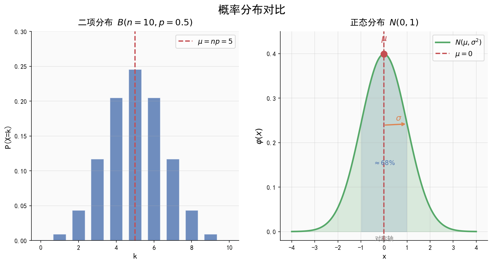

| 字段 | 内容 |
|---|---|
| 来源 | 53科学备考《高中知识清单》数学知识图谱 / 人教A版选择性必修第三册第七章 |
| 时间标签 | #高二深化 |
| 难度 | ★★★★☆ |
| 状态 | ⚠️待强化 |
| 试卷来源 | #新高考Ⅰ卷·广东 |
| 广东考情 | 考查频率：高频；难度：中档~中高档；二项分布和正态分布是概率统计大题的核心，正态分布的3\sigma原则常用于实际应用题 |

#### 3\sigma 原则
| 区间 | 概率 |
|---|---|
| $P(\mu - \sigma \leq X \leq \mu + \sigma)$ | $\approx 0.6827$ |
| $P(\mu - 2\sigma \leq X \leq \mu + 2\sigma)$ | $\approx 0.9545$ |
| $P(\mu - 3\sigma \leq X \leq \mu + 3\sigma)$ | $\approx 0.9973$ |